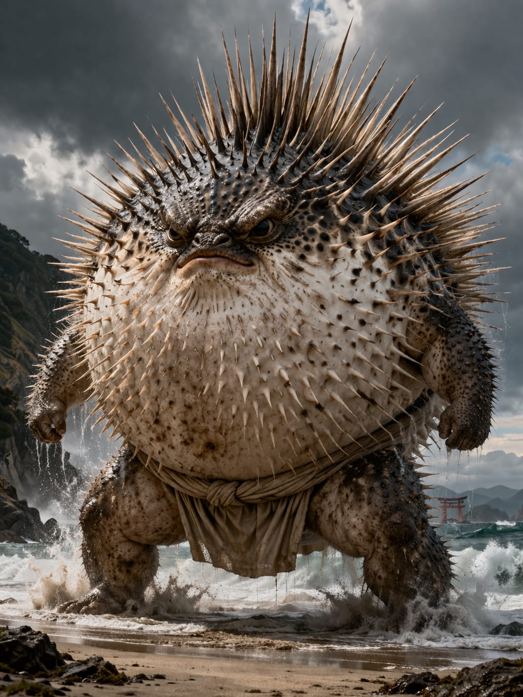

Pufferfish
Tetraodontidae
Region: Indo-Pacific
Habitat: Coastal waters, reefs, lagoons and shallow marine environments
Martial Representation: Sumo
The Pufferfish embodies compact mass, defensive pressure and explosive close-range force. Heavy, stubborn and difficult to displace, it thrives through frontal dominance, balance disruption and crushing body commitment. In combat, it turns every exchange into a test of stability, pressure and raw structural control.
Martial Discipline Overview
Sumo is a Japanese grappling discipline centered on balance, body positioning, explosive force and ring control. It emphasizes upright power, direct collision and the ability to break an opponent’s structure in a single committed exchange. Within WAFT, it enhances life, defense, explosiveness and close-range dominance.
Combat Attributes
Combat Abilities
Passive Ability
Residual Neurotoxin
When using Concentration, if the opponent attacks, they suffer −10% Speed, Technique and Evasion on their next turn.
Special Attack
Overinflation
Becomes completely immune to damage for 1 turn.
If struck during this state, it injects Tetrodotoxin (TTX), applying −25% Precision, −25% Evasion and −25% Speed on the opponent’s next turn.
If used for two consecutive turns, Pufferfish explodes, dealing 100 damage and leaving itself at 1 Life.
Ultimate Charge: Uses (4 uses)